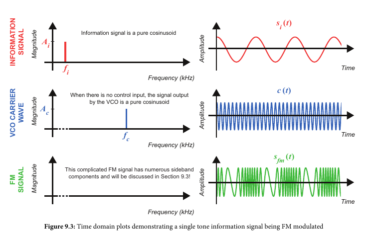
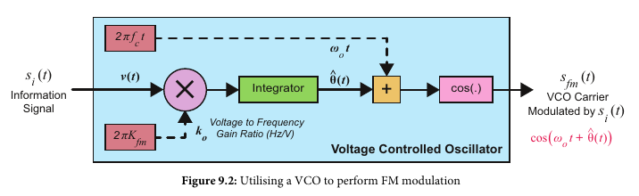
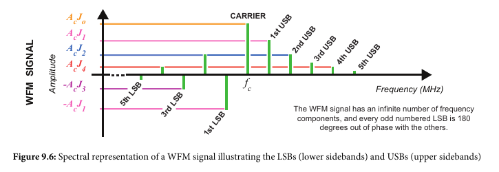
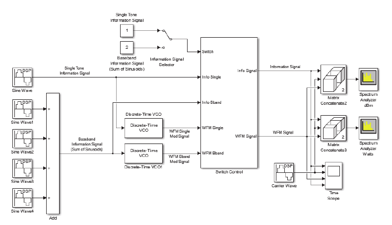
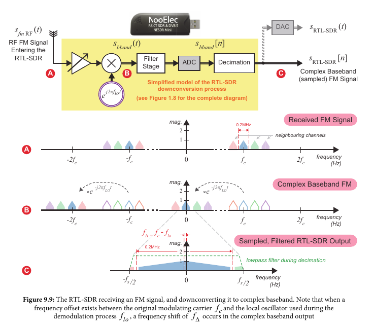
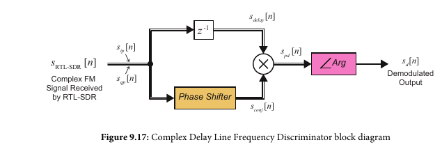
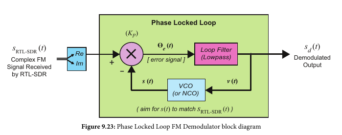
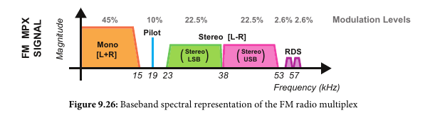

Frequency Modulation (FM)
Manipulates frequency instead of amplitude. The amplitude of the
information signal causes the resulting modulated signal frequency
to increase (higher amplitude) or decrease (lower amplitude).

VCO (Voltage Controlled Oscillator)
Simple FM modulator

Modulation Index and Signal Bandwidth (βfm)
- Frequency modulation can either be narrowband or sideband
- Narrowband if the modulation index βfm << 1
- Wideband if the modulation index βfm >> 1
- This is what FM radio stations use
- Carson's Rule: The bandwidth of a wide band FM signal can
be approximated as (2 * num_sidebands * info frequency).
The number of sidebands can be replaced with βfm+1
which equals 2*(Δf + fi) Hz
- 
- 
- Note the matlab circuit is exactly the same as narrowband except
the modulation index is larger
Differential Demodulation
- Take the derivative of the received signal
Receiving FM into Complex Baseband
- Quadrature Demodulation
- 
Complex Differentiation Discriminator (Non-coherent Demodulation)
- Demodulates the real and imaginary component separately
- Digital Version uses a differentiator, with FIR filters
with components -1,0,1 or 1,-1
Complex Delay Line Discriminator
- Simpler version of above that demodulates the real and imaginary
components in parallel
- 
Phased Locked Loop Demodulator (Coherent demodulation)
- Just uses the real component of the signal
- 
Other concerns specific to commercial FM radio
- De-emphasis filtering
- need to filter a 'pre-emphasis' which was added to the signal
before transmission. The pre-emphasis filters signals
above a certain frequency in order to maintain the modulation index
and signal bandwidth.
- De-multiplexing the signal
- The received commercial FM signal is multiplexed and contains mono,
stereo, and a 'pilot' component, as well as possibly RDS
digital information stream (song title, station, etc.)
- 
- FM encoder and multiplexer:
- FM decoder and de-multiplexer: